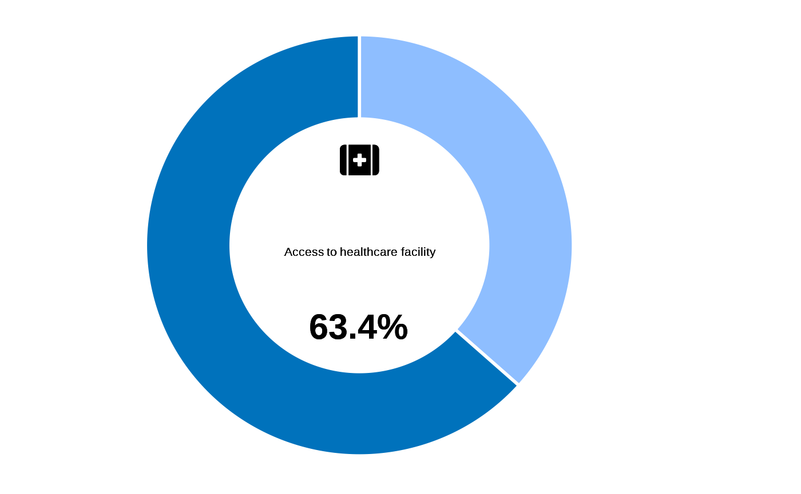
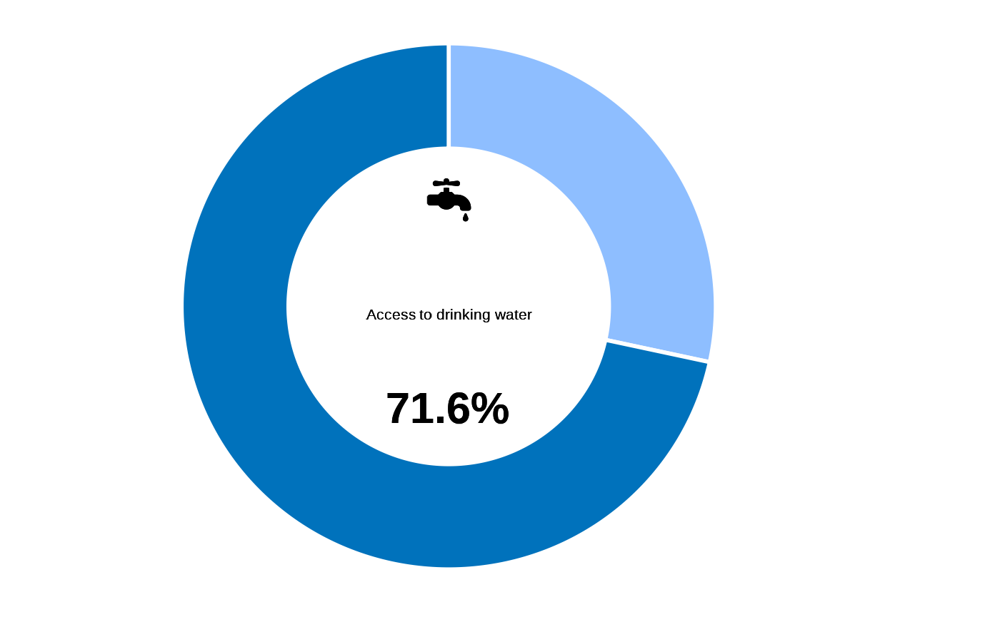
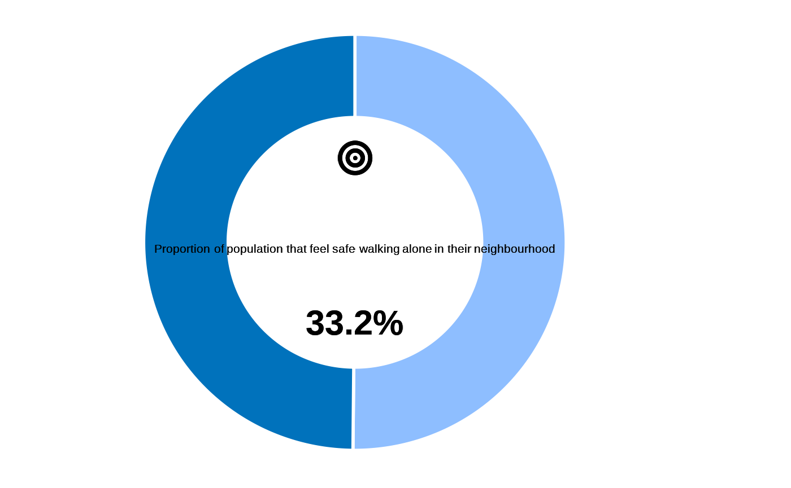
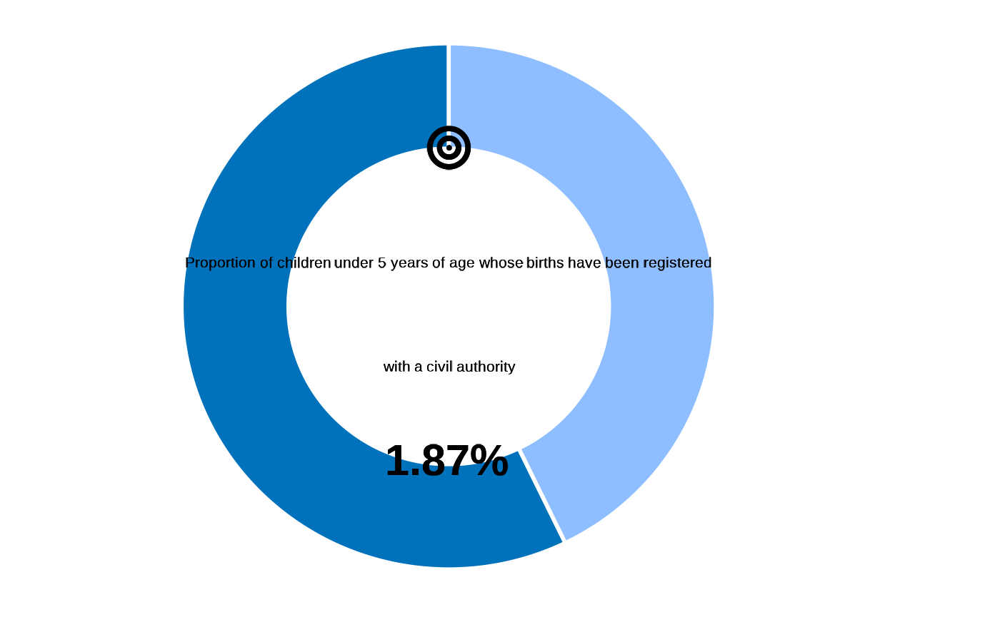
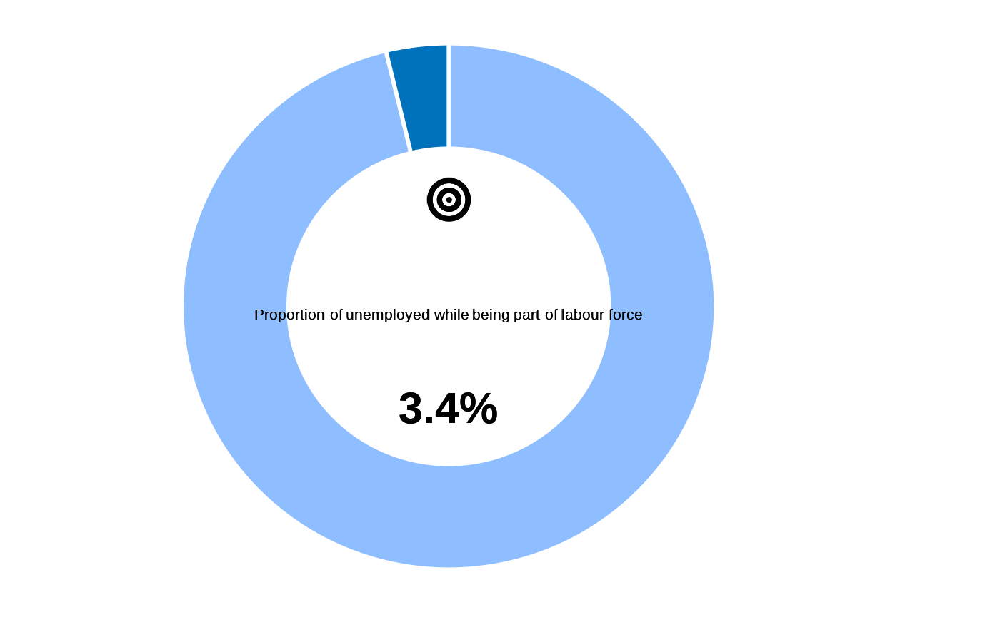
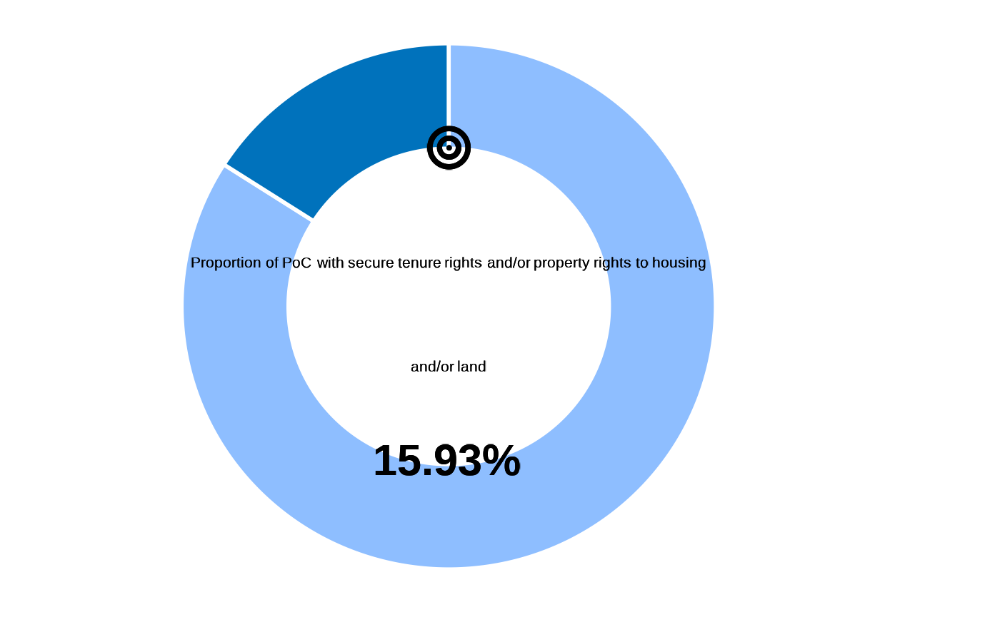

Indicators calculation functions
Source:vignettes/indicators-calculation-functions.Rmd
indicators-calculation-functions.RmdImpact Indicators
impact_2_2
## data, cf example fct_re_map()
datalist <- kobocruncher::kobo_data( system.file("dummy_RMS_CAPI_v2_mapped.xlsx",
package = "IndicatorCalc"))
## Apply calculation
datalist <- impact_2_2(datalist)
#> ✔ HEA01
#> ✔ HEA02
#> ✔ HEA03
#> ✔ LIGHT01
#> ✔ LIGHT02
#> ✔ LIGHT03
#> ✔ DWA01
#> ✔ DWA02
#> ✔ DWA03a
#> ✔ DWA03b
#> ✔ DWA04
#> ✔ DWE01
#> ✔ DWE02
#> ✔ DWE03
#> ✔ DWE04
#> ✔ DWE05
#> ✔ DWE08
#> ✔ DWE09
#> ✔ HH01
table(datalist[["main"]]$impact2_2, useNA = "ifany")
#>
#> 0 1
#> 1492 8
fct_plot_indic_donut(indicator = datalist[["main"]]$impact2_2,
iconunicode = "f140")
## Can get the details as well
table(datalist[["main"]]$electricity, useNA = "ifany")
#>
#> 0 1
#> 763 737
fct_plot_indic_donut(indicator = datalist[["main"]]$electricity,
iconunicode = "f0e7")
table(datalist[["main"]]$healthcare, useNA = "ifany")
#>
#> 0 1
#> 549 951
fct_plot_indic_donut(indicator = datalist[["main"]]$healthcare,
iconunicode = "f479") 
table(datalist[["main"]]$drinkingwater, useNA = "ifany")
#>
#> 0 1
#> 426 1074
fct_plot_indic_donut(indicator = datalist[["main"]]$drinkingwater,
iconunicode = "e006") 
## Check intermediary variables
table(datalist[["main"]]$dwa_cond1, useNA = "ifany")
#>
#> 1
#> 1500
table(datalist[["main"]]$reachableU30, useNA = "ifany")
#>
#> 0 1
#> 1246 254
table(datalist[["main"]]$DWA02, useNA = "ifany")
#>
#> 1 2 3
#> 497 476 527
table(datalist[["main"]]$dwa_cond2, useNA = "ifany")
#>
#> 0 1
#> 426 1074
# Tabulate
table(datalist[["main"]]$dwe01_cat, useNA = "ifany")
#>
#> 0 1
#> 1212 288
table(datalist[["main"]]$dwe02_cat, useNA = "ifany")
#>
#> 0 1
#> 422 1078
table(datalist[["main"]]$dwe03_cat, useNA = "ifany")
#>
#> 0 1
#> 835 665
table(datalist[["main"]]$dwe04_cat, useNA = "ifany")
#>
#> 0 1
#> 952 548
table(datalist[["main"]]$dwe05_cat, useNA = "ifany")
#>
#> 0 1
#> 258 1242
table(datalist[["main"]]$shelter, useNA = "ifany")
#>
#> 0 1
#> 1472 28
#plot
fct_plot_indic_donut(datalist[["main"]]$shelter,
iconunicode = "e54f") impact2_3
## data, cf example fct_re_map()
# datalist <- kobocruncher::kobo_data( system.file("dummy_RMS_CAPI_v2_mapped.xlsx",
# package = "IndicatorCalc"))
# ## Apply calculation
# datalist <- impact2_3(datalist )
#
# ## Visualise value
# fct_plot_indic_donut(indicator = datalist[["ind"]]$impact2_3,
# iconunicode = "f140") impact3_2a
## data, cf example fct_re_map()
datalist <- kobocruncher::kobo_data( system.file("dummy_RMS_CAPI_v2_mapped.xlsx",
package = "IndicatorCalc"))
## Apply calculation
datalist <- impact3_2a(datalist )
#> ✔ EDU01
#> ✔ EDU02
#> ✔ EDU03
#> ✔ EDU04
#> ✔ HH07
table(datalist[["ind"]]$impact3_2a, useNA = "ifany")
#>
#> 0.717948717948718
#> 1500
table(datalist[["ind"]]$edu_primary, useNA = "ifany")
#>
#> 0 1
#> 1444 56
table(datalist[["ind"]]$age_primary, useNA = "ifany")
#>
#> 1 <NA>
#> 78 1422
## Visualise value
fct_plot_indic_donut(indicator = datalist[["ind"]]$impact3_2a,
iconunicode = "f140") impact3_2b
## data, cf example fct_re_map()
datalist <- kobocruncher::kobo_data( system.file("dummy_RMS_CAPI_v2_mapped.xlsx",
package = "IndicatorCalc"))
## Apply calculation
datalist <- impact3_2b(datalist )
#> ✔ EDU01
#> ✔ EDU02
#> ✔ EDU03
#> ✔ EDU04
#> ✔ HH07
## Visualise value
fct_plot_indic_donut(indicator = datalist[["ind"]]$impact3_2b,
iconunicode = "f140") impact3_3
## data, cf example fct_re_map()
datalist <- kobocruncher::kobo_data( system.file("dummy_RMS_CAPI_v2_mapped.xlsx",
package = "IndicatorCalc"))
## Apply calculation
datalist <- impact3_3(datalist)
#> ✔ SAF01
## Visualise value
fct_plot_indic_donut(indicator = datalist[["main"]]$impact3_3,
iconunicode = "f140") 
Outcome indicators
outcome1_2
## data, cf example fct_re_map()
datalist <- kobocruncher::kobo_data( system.file("dummy_RMS_CAPI_v2_mapped.xlsx",
package = "IndicatorCalc"))
## Apply indicator function on datalist
datalist <- outcome1_2(datalist)
#> ✔ REG03
#> ✔ REG04
#> ✔ HH07
table(datalist[["ind"]]$outcome1_2, useNA = "ifany")
#>
#> 0 1 <NA>
#> 21 28 1451
table(datalist[["ind"]]$less_than_5, useNA = "ifany")
#>
#> 0 1
#> 1438 62
table(datalist[["ind"]]$HH07, useNA = "ifany")
#>
#> 0 10 11 12 13 14 15 16 17 18 19 2 20 21 22 23
#> 15 14 18 21 20 7 16 20 18 17 19 13 15 16 11 24
#> 24 25 26 27 28 29 3 30 31 32 33 34 35 36 37 38
#> 14 20 13 15 17 18 16 22 17 13 13 15 10 16 9 13
#> 39 4 40 41 42 43 44 45 46 47 48 49 5 50 51 52
#> 8 18 19 9 16 11 14 16 19 20 23 11 13 10 9 13
#> 53 54 55 56 57 58 59 6 60 61 62 63 64 65 66 67
#> 22 16 16 12 13 13 15 14 13 17 18 8 14 12 20 12
#> 68 69 7 70 71 72 73 74 75 76 77 78 79 8 80 81
#> 18 19 14 18 22 13 19 17 16 20 19 18 16 18 16 9
#> 82 83 84 85 86 87 88 89 9 90 91 92 93 94 95 <NA>
#> 19 21 18 13 12 23 12 20 18 18 11 18 23 14 12 7
barplot(as.integer(datalist[["ind"]]$HH07))
table(datalist[["ind"]]$birthCertificate, useNA = "ifany")
#>
#> 0 1
#> 979 521
table(datalist[["ind"]]$birthRegistered, useNA = "ifany")
#>
#> 0 1 <NA>
#> 762 378 360
## Visualise value
fct_plot_indic_donut(indicator = datalist[["ind"]]$outcome1_2,
iconunicode = "f140") 
fct_plot_indic_donut(indicator = datalist[["ind"]]$birthCertificate,
iconunicode = "f140")
fct_plot_indic_donut(indicator = datalist[["ind"]]$birthRegistered,
iconunicode = "f140") outcome1_3
## data, cf example fct_re_map()
datalist <- kobocruncher::kobo_data( system.file("dummy_RMS_CAPI_v2_mapped.xlsx",
package = "IndicatorCalc"))
## Apply indicator function on datalist
datalist <- outcome1_3(datalist)
#> ✔ REG01a
#> ✔ REG01b
#> ✔ REG01c
#> ✔ REG01d
#> ✔ REG01e
#> ✔ REG01f
#> ✔ REG01g
#> ✔ REG02
#> ✔ REG03
#> ✔ REG05a
#> ✔ REG05b
#> ✔ REG05c
#> ✔ REG05d
#> ✔ REG05e
#> ✔ REG05f
#> ✔ REG06
## Visualise value
fct_plot_indic_donut(indicator = datalist[["ind"]]$outcome1_3,
iconunicode = "f140")
fct_plot_indic_donut(indicator = datalist[["ind"]]$document_above5,
iconunicode = "f140")
fct_plot_indic_donut(indicator = datalist[["ind"]]$document_under5,
iconunicode = "f140") outcome4_1
## data, cf example fct_re_map()
datalist <- kobocruncher::kobo_data( system.file("dummy_RMS_CAPI_v2_mapped.xlsx",
package = "IndicatorCalc"))
## Apply indicator function on datalist
datalist <- outcome4_1(datalist )
#> ✔ GBV01a
#> ✔ GBV01b
#> ✔ GBV01c
#> ✔ GBV01d
## Visualise value
fct_plot_indic_donut(indicator = datalist[["main"]]$outcome1_4,
iconunicode = "f140")
#> No value was supplied for plotting...outcome4_2
## data, cf example fct_re_map()
datalist <- kobocruncher::kobo_data( system.file("dummy_RMS_CAPI_v2_mapped.xlsx",
package = "IndicatorCalc"))
## Apply indicator function on datalist
datalist <- outcome4_2(datalist)
#> ✔ VAW01a
#> ✔ VAW01b
#> ✔ VAW01c
#> ✔ VAW01d
#> ✔ VAW01e
## Visualise value
fct_plot_indic_donut(indicator = datalist[["main"]]$outcome4_2,
iconunicode = "f140") outcome5_2
## data, cf example fct_re_map()
datalist <- kobocruncher::kobo_data( system.file("dummy_RMS_CAPI_v2_mapped.xlsx",
package = "IndicatorCalc"))
## Apply indicator function on datalist
datalist <- outcome5_2(datalist )
#> ✔ COMM01
#> ✔ COMM02
#> ✔ COMM03
#> ✔ COMM04
## Visualise value
fct_plot_indic_donut(indicator = datalist[["ind"]]$outcome5_2,
iconunicode = "f140") outcome8_2
## data, cf example fct_re_map()
datalist <- kobocruncher::kobo_data( system.file("dummy_RMS_CAPI_v2_mapped.xlsx",
package = "IndicatorCalc"))
## Apply indicator function on datalist
datalist <- outcome8_2(datalist )
#> ✔ COOK01
#> ✖ COOK02 not found in the dataset.
#> ✖ COOK03 not found in the dataset.
#> There are missing data requirement to calculate Indicator Outcome 8.2
## Visualise value
fct_plot_indic_donut(indicator = datalist[["main"]]$outcome8_2,
iconunicode = "f140")
#> No value was supplied for plotting...outcome9_1
## data, cf example fct_re_map()
datalist <- kobocruncher::kobo_data( system.file("dummy_RMS_CAPI_v2_mapped.xlsx",
package = "IndicatorCalc"))
## Apply indicator function on datalist
datalist <- outcome9_1(datalist)
#> ✔ DWE01
#> ✔ DWE02
#> ✔ DWE03
#> ✔ DWE04
#> ✔ DWE05
#> ✔ DWE08
#> ✔ DWE09
#> ✔ HH01
## Visualise value
fct_plot_indic_donut(indicator = datalist[["main"]]$outcome9_1,
iconunicode = "f140") 
outcome9_2
## data, cf example fct_re_map()
datalist <- kobocruncher::kobo_data( system.file("dummy_RMS_CAPI_v2_mapped.xlsx",
package = "IndicatorCalc"))
## Apply indicator function on datalist
datalist <- outcome9_2(datalist )
#> ✔ LIGHT01
#> ✔ LIGHT02
#> ✔ LIGHT03
## Visualise value
fct_plot_indic_donut(indicator = datalist[["main"]]$outcome9_2,
iconunicode = "f140") outcome10_1
## data, cf example fct_re_map()
datalist <- kobocruncher::kobo_data( system.file("dummy_RMS_CAPI_v2_mapped.xlsx",
package = "IndicatorCalc"))
## Apply indicator function on datalist
datalist <- outcome10_1(datalist)
#> ✔ MMR03
## Visualise value
fct_plot_indic_donut(indicator = datalist[["ind"]]$outcome10_1,
iconunicode = "f140") outcome10_2
## data, cf example fct_re_map()
datalist <- kobocruncher::kobo_data( system.file("dummy_RMS_CAPI_v2_mapped.xlsx",
package = "IndicatorCalc"))
## Apply indicator function on datalist
datalist <- outcome10_2(datalist )
#> ✔ BIR01
#> ✔ BIR02
#> ✔ BIR03
#> ✔ BIR04
## Visualise value
fct_plot_indic_donut(indicator = datalist[["main"]]$outcome10_2,
iconunicode = "f140") outcome12_1
## data, cf example fct_re_map()
datalist <- kobocruncher::kobo_data( system.file("dummy_RMS_CAPI_v2_mapped.xlsx",
package = "IndicatorCalc"))
## Apply indicator function on datalist
datalist <- outcome12_1(datalist )
#> ✔ DWA01
#> ✔ DWA02
#> ✔ DWA03a
#> ✔ DWA03b
#> ✔ DWA04
## Visualise value
fct_plot_indic_donut(indicator = datalist[["main"]]$outcome12_1,
iconunicode = "f140") outcome12_2
## data, cf example fct_re_map()
datalist <- kobocruncher::kobo_data( system.file("dummy_RMS_CAPI_v2_mapped.xlsx",
package = "IndicatorCalc"))
## Apply indicator function on datalist
datalist <- outcome12_2(datalist)
#> ✔ TOI01
#> ✔ TOI02
#> ✖ TOI03 not found in the dataset.
#> ✖ TOI04 not found in the dataset.
#> ✖ TOI05 not found in the dataset.
#> There are missing data requirement to calculate Indicator Outcome 12.2
## Visualise value
fct_plot_indic_donut(indicator = datalist[["main"]]$outcome12_2,
iconunicode = "f140")
#> No value was supplied for plotting...outcome13_1
## data, cf example fct_re_map()
datalist <- kobocruncher::kobo_data( system.file("dummy_RMS_CAPI_v2_mapped.xlsx",
package = "IndicatorCalc"))
## Apply indicator function on datalist
datalist <- outcome13_1(datalist )
#> ✔ BANK01
#> ✔ BANK02
#> ✔ BANK03
#> ✔ BANK04
#> ✔ BANK05
## Visualise value
fct_plot_indic_donut(indicator = datalist[["main"]]$outcome13_1,
iconunicode = "f140") outcome13_2
## data, cf example fct_re_map()
datalist <- kobocruncher::kobo_data( system.file("dummy_RMS_CAPI_v2_mapped.xlsx",
package = "IndicatorCalc"))
## Apply indicator function on datalist
datalist <- outcome13_2(datalist)
#> ✔ INC01
## Visualise value
fct_plot_indic_donut(indicator = datalist[["main"]]$outcome13_2,
iconunicode = "f140") outcome13_3
## data, cf example fct_re_map()
datalist <- kobocruncher::kobo_data( system.file("dummy_RMS_CAPI_v2_mapped.xlsx",
package = "IndicatorCalc"))
## Apply indicator function on datalist
datalist <- outcome13_3(datalist )
#> ✔ UNEM01
#> ✔ UNEM02
#> ✔ UNEM03
#> ✔ UNEM04
#> ✔ UNEM05
#> ✔ UNEM06
#> ✔ UNEM07
#> ✔ UNEM08
#> ✔ UNEM09
#> ✔ UNEM10
table( datalist[["main"]]$outcome13_3, useNA = "ifany")
#>
#> 0 1 <NA>
#> 1298 51 151
## Visualise value
fct_plot_indic_donut(indicator = datalist[["main"]]$outcome13_3,
iconunicode = "f140") 
outcome14_1
## data, cf example fct_re_map()
datalist <- kobocruncher::kobo_data( system.file("dummy_RMS_CAPI_v2_mapped.xlsx",
package = "IndicatorCalc"))
## Apply indicator function on datalist
datalist <- outcome14_1(datalist )
#> ✔ REG01a
#> ✔ REG01b
#> ✔ REG01c
#> ✔ REG01d
#> ✔ REG01e
#> ✔ REG01f
#> ✔ REG01g
#> ✔ REG02
#> ✔ REG03
#> ✔ REG04
#> ✔ REG05a
#> ✔ REG05b
#> ✔ REG05c
#> ✔ REG05d
#> ✔ REG05e
#> ✔ REG05f
#> ✔ REG06
## Visualise value
fct_plot_indic_donut(indicator = datalist[["ind"]]$outcome14_1,
iconunicode = "f140") outcome16_1
## data, cf example fct_re_map()
datalist <- kobocruncher::kobo_data( system.file("dummy_RMS_CAPI_v2_mapped.xlsx",
package = "IndicatorCalc"))
## Apply indicator function on datalist
datalist <- outcome16_1(datalist )
#> ✔ DWE06
#> ✔ DWE07
#> ✔ DWE10
#> ✔ DWE11
## Visualise value
fct_plot_indic_donut(indicator = datalist[["main"]]$outcome16_1,
iconunicode = "f140") 
outcome16_2
## data, cf example fct_re_map()
datalist <- kobocruncher::kobo_data( system.file("dummy_RMS_CAPI_v2_mapped.xlsx",
package = "IndicatorCalc"))
## Apply indicator function on datalist
datalist <- outcome16_2(datalist)
#> ✔ SPF01a
#> ✔ SPF01b
#> ✔ SPF01c
#> ✔ SPF01d
#> ✔ SPF01e
#> ✔ SPF01f
#> ✔ SPF01g
#> ✔ SPF01h
table( datalist[["main"]]$outcome16_2, useNA = "ifany")
#>
#> 0 1
#> 63 1437
## Visualise value
fct_plot_indic_donut(indicator = datalist[["main"]]$outcome16_2,
iconunicode = "f140")